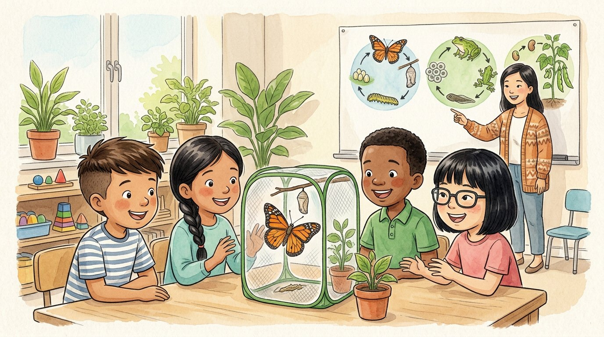

3er grado · Ciencias · 3-LS1-1
Cinco orugas en el salón
Un cuento sobre cómo nacen, crecen y cambian los seres vivos.
Palabras de ciencia que vas a aprender
Toca una palabra verde para ver qué significa.
El cuento
Un lunes, la señora Kim llegó al salón con una caja de malla. Adentro había cinco orugas pequeñitas y unas hojas verdes. —Vamos a cuidarlas y a observar cómo cambian —dijo.
—Todos los seres vivos tienen un —explicó la maestra—: , , se y al final mueren. Pero cada uno lo hace a su manera.
Las orugas habían salido de huevos diminutos. Una oruga es la de la mariposa: la etapa en la que come y crece muchísimo. Israel anotaba cada día en su diario: «Hoy están más gordas».
A las dos semanas, las orugas subieron a la tapa de la caja y se colgaron cabeza abajo. Poco a poco se cubrieron con una envoltura dura y café. —Ahora cada una es una —dijo Mei—. Por fuera parece quieta, pero por dentro está cambiando.
Diez días después, Lucía gritó: —¡Está saliendo una! Una mariposa anaranjada abría sus alas mojadas. Ese gran cambio de oruga a mariposa se llama .
La maestra señaló el cartel de la pared. —Las ranas también cambian: del huevo sale un renacuajo que vive en el agua, y después se convierte en rana. Las plantas de frijol empiezan como semilla, crecen, dan flores y hacen nuevas semillas.
—¿Y nosotros? —preguntó Jamal. —Los seres humanos no hacemos metamorfosis —rio la señora Kim—. Nacemos bebés, crecemos hasta ser adultos y nos parecemos a nuestros padres desde el principio.
Al final de la semana, la clase llevó las cinco mariposas al jardín de la escuela. Una por una volaron hacia las flores. Algún día pondrían huevos, y el ciclo empezaría otra vez.
Esa tarde, Israel dibujó en su diario un círculo con flechas: huevo, oruga, crisálida, mariposa… y otra vez huevo. —Por eso se llama ciclo —pensó—: porque da la vuelta y vuelve a empezar.
Glosario
- ciclo de vida
- Las etapas por las que pasa un ser vivo: nacer, crecer, reproducirse y morir. Se repiten con cada nueva generación.
- nacer
- Empezar a vivir, al salir de un huevo, de la mamá o de una semilla.
- crecer
- Hacerse más grande y cambiar con el tiempo.
- reproducirse
- Tener crías o hacer semillas, para que haya nuevos seres vivos de la misma clase.
- larva
- La etapa joven de algunos animales, que es muy distinta del adulto. La oruga es la larva de la mariposa.
- crisálida
- La envoltura dura donde la oruga se transforma en mariposa.
- metamorfosis
- Un gran cambio en la forma del cuerpo durante la vida de un animal, como de oruga a mariposa o de renacuajo a rana.
Preguntas
Elige la respuesta correcta. Si te equivocas, el cuento te muestra dónde está la respuesta.
-
Pregunta A. ¿Qué etapas tienen todos los ciclos de vida?
Todos los seres vivos nacen, crecen, se reproducen y al final mueren.
-
Pregunta B. ¿Qué es la oruga?
La oruga es la larva de la mariposa: la etapa en la que come y crece.
-
Pregunta C. ¿Qué pasa dentro de la crisálida?
Por fuera parece quieta, pero por dentro la oruga está cambiando.
-
Pregunta D. ¿Cómo se llama el cambio de oruga a mariposa?
El gran cambio de oruga a mariposa se llama metamorfosis.
-
Pregunta E. ¿En qué se diferencia el ciclo de vida de los seres humanos?
Los seres humanos no hacemos metamorfosis: nacemos bebés y crecemos hasta ser adultos.